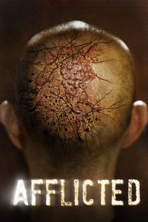

#7055 Afflicted
 
 IMDB-Wertung: 6.3 / 10
IMDB-Wertung: 6.3 / 10  Metascore: 0
Metascore: 0 
Eigentlich hätte es der Trip ihres Lebens werden sollen und alles wird per Kamera dokumentiert. Doch nachdem einer der beiden besten Freunde nach einem One-Night-Stand in Paris übernatürliche Fähigkeiten entwickelt, die mit unangenehmen Nebenwirkungen einhergehen, nimmt der Trip eine gefährliche Wendung.
Jahr: 2013
Dauer: 85 Minuten
FSK: 16
Land: Kanada Studio: Sony Pictures Home EntertainmentTonspuren: DTS - ,
Untertitel: Deutsch,
Auflösung: 1080p (1920x1080) Größe: 6154 MB
Genre: Thriller, Horror, Mystery
Regisseur: Derek Lee, Clif Prowse
Drehbuch: Derek Lee
Soundtrack:
Darsteller:
- Derek Lee als Derek
- Clif Prowse als Clif
- Baya Rehaz als Audrey
- Brian Kavanaugh-Jones als French Police Officer
- Adrian Buitenhuis als French Tactical Officer
- Doreen Gordon als Chiara
- Tasya Teles als Maria
 Sharlene Royer als Receptionist
Sharlene Royer als Receptionist- Michael Gill als Michael Gill
- Benjamin Zeitoun als Maurice
- Zach Gray als Zachary Gray
- Jason Lee als Jason
- Edo Van Breemen als Edo Van Breeman
- Gary Redekop als Dr. Redekop
- Lily Py Lee als Derek's Mom
- Ellen Ferguson als Club Girl
- Chiara Caggiati als Waitress
- Domenico Di Michele als Restaurant Guest
- Susie Barrow als Restaurant Guest
- Lise Bertram als Restaurant Guest
- Agostino Roncallo als Restaurant Guest
- Bartolo Lecari als Vintner
- Lucia De Pace als Paramedic
- Andrew Ferguson als Ambulance Victim
- Paolo Basso als Inspector Barbiero
- Greg Ng als Disgruntled Tourist
- Julie Basso als Restaurant Guest
- Patrick Effiboley als Hotel Clerk
- Graham Fortin als French Police Officer
- Jesse Savath als French Police Officer
- Ernek Reder als French Police Officer
- Stéphane Julien als Cop on Roof
- Hjortur Helgason als French Tactical Officer
- Zack Mosley als French Tactical Officer
- Asterios Moutsokapas als French Tactical Officer
- Jeremy Muir als French Tactical Officer
- Alexander Ferguson als Pedophile
- Ian Hanlin als Jeff
- Camilla De Cesare als Dina
- Jen Guiterrez als Jen
- Ulysse de Gregorio als Junkie
Datei: X:\2013(A-F)\Afflicted (2013, FSK16, 1920x1080).mkv seit 21.09.2017
Festplatte: HD 2012(N-Z)-2013(A-H)
 Es gibt insgesamt 127 Filme in der Gruppe '2013(A-F)'
Es gibt insgesamt 127 Filme in der Gruppe '2013(A-F)'